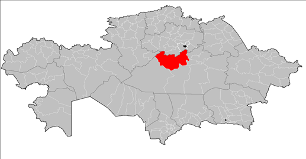

Сарыарка состоит из двух заповедников, расположенных в степной зоне Казахстана, — Коргалжынского и Наурзумского, общей площадью 450 344 га. Объект включает в себя две группы озёр с пресной и солёной водой, расположенных на водоразделе, отделяющем реки, текущие на север к Арктике и на юг — к Аральскому бассейну и являющихся важными местами остановок для миллионов перелётных птиц, ежегодно мигрирующих из Африки, Индии и южной Европы к местам гнездования в Западной и Восточной Сибири. Эти водно-болотные угодья поддерживают популяции глобально угрожаемых видов, таких как стерх, розовый фламинго, кречетка, орлан-белохвост, савка, кудрявый пеликан и др. 200 тыс. га самобытной центрально-азиатской степи, вошедших в состав объекта, являются местом обитания более половины видов степной флоры региона, а также антилопы сайгака.